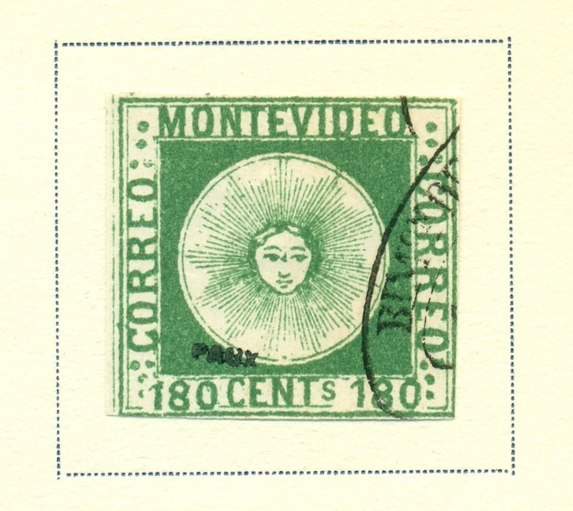
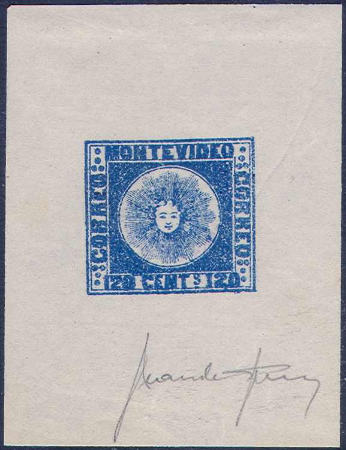

Return To Catalogue - Uruguay 1858 'Sun' issue - Uruguay 1858 'Sun' issue, 'simple' forgeries
Note: on my website many of the
pictures can not be seen! They are of course present in the
catalogue;
contact me if you want to purchase it.

These forgeries from the Fournier Album were probably not made by
Fournier, but only sold by him.


Fournier forgeries with 'FAUX' overprint, some taken from a
Fournier Album.


Some other Fournier forgeries from the Fournier Album, but of a
different type with some kind of 'dot' on the forehead.

Forged Fournier cancels.


Fournier forgeries with the forged "ADMINon DE CORREOS
NOVbre 15 1862 MONTEVIDEO" cancel.


Forgery of the 240 c value; originally thought to be genuine
(appearing in blocks of four, two types in tete-beche). I've been
told that it could have been made by Fournier. I've only seen it
with two punchholes (to indicate it is a forgery?).
Some very dangerous Sperati forgeries exist. Sperati made forgeries of all 3 stamps.

Blackprint of Sperati's 'Reproduction B' of the 120 c value

Reproduction 'A', proof

Sperati forgeries of the 180 c value; Reproduction 'A' has a very
blotchy 'MON' and left '180'. Reproduction 'B' has a very smudgy
lower right outer frameline.

180 c Sperati Reproduction A with cancel.


Sperati's 'Reproduction A' of the 240 c stamp (based on the
genuine type 25). It often appears with cancel 'MONTEVIDEO 6 OCTE
1859 MONTEVIDEO' in an ellipse. There is a white spot in the
internal rectangular design to the right of the 'CO' of
'CORREOS'.

Sperati Reproduction 'B' of the 240 c (based on the genuine type
29).

Sperati Reproduction 'C' of the 240 c (based on the genuine type
5), the 'M' of MONTEVIDEO' is broken at the left hand side, the
'C' of the left 'CORREOS' is connected to the central square by
red ink. (Image obtained from Richard Frajola's website:
http://www.seymourfamily.com/rfrajola/Sperati/speratiindex.htm).
The cancel is also forged 'ADMon DE CORREOS 22 DECE 1859
MONTEVIDEO'.

Sperati reproduction 'D' of the 240 c value (based on the genuine
type 4). Above the 'V' of 'MONTEVIDEO' a large red dot in the
white frameline can be found.
The cancels forged by Sperati are:
'ADMon DE CORREOS MONTEVIDEO' in a single ellipes with the
following dates:
'15 ABRIL 1859', '25 JUNIO 1859', '29 AGOSTO 1859, '6 OCTE 1859',
'29 NOVE 1859', '22 DICE 1859', '8 ENER.. 1860' (partial strike),
'20 ENERO 1860', '19 ABRIL 1860', '8 MAYO 1860', '10 ABRIL 1861',
'16 AGOSTO 1861', '24 MARZO 1862', '18 AGOSTO 1863', '27 DICE
1864'.
'ADMIN ..RREOS MONTEVIDEO DICBRE 8 1863' in a double ellipse
'ADMon DE CORREOS MONTEVIDEO 20 NOVIBRE 1865' in a double ellipse
Two staggered ellipses, 'ADon DE CORREOS' on top,
'REP-O-DEL-URUG' below, with townnames 'ROSARIO', 'MERCEDES' or
'PAYSANDU' in the center.
A rounded rectangle with 'CERTIFICACION'
The mute negative cancel of Salto, in either a full strike or the
upper left quarter as a partial strike.
Manual pencancels (on first issue).
More on forgeries can be found on http://www.geocities.com/claghorn1p/Uruguay/index.htm (Bill Claghorn's site).
{kind=link}
{kind=link}